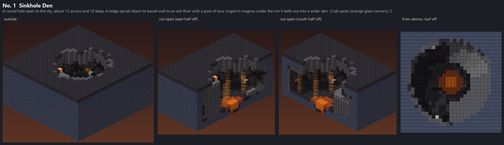
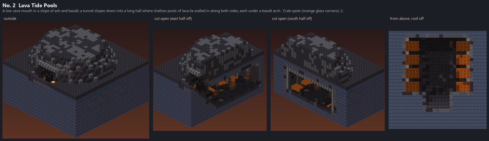
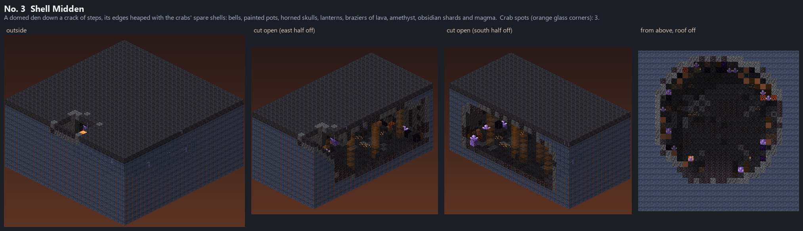
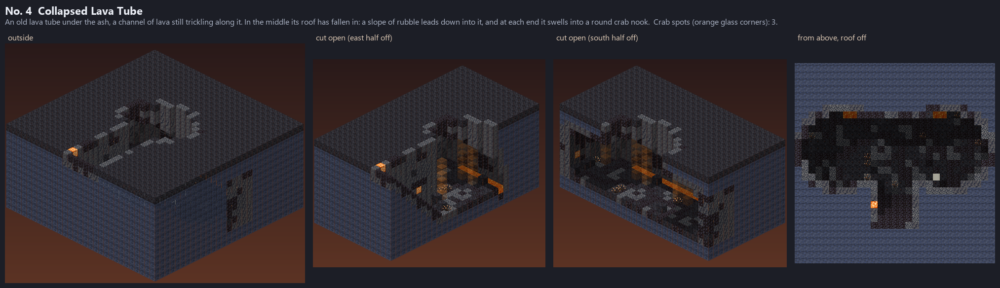
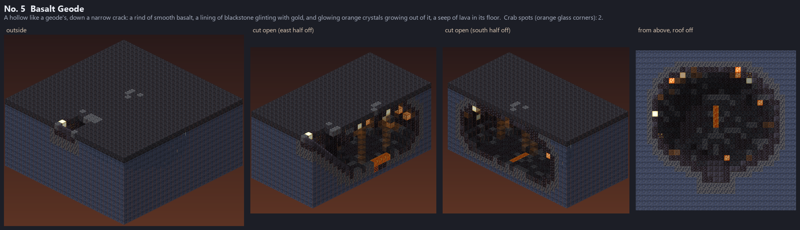
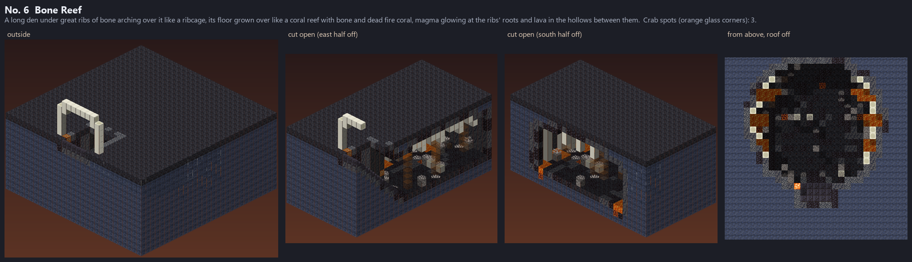
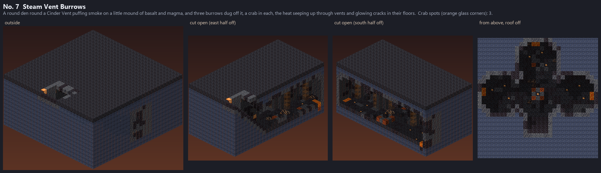

Seven small dens of the Cinder Hermit, about 10 blocks down into the Cinder Wastes, each with room for 2-3 of the
crabs (their spots: the orange glass corners in the cut-away pictures). Every lava block is walled in under and on all
four sides, every floor cell can be walked to from the way in (at the south) and is lit. In the game:
/dross showcase hermit_caves; in the world, 1-2 in every Cinder Wastes area (/dross goto hermit_cave).
A round hole open to the sky, about 13 across and 10 deep. A ledge spirals down its basalt wall to an ash floor with a pool of lava ringed in magma; under the rim it bells out into a wider den.
2 crab spot(s), 18 lava blocks, its darkest floor cell lit 4.

A low cave mouth in a slope of ash and basalt; a tunnel slopes down into a long hall where shallow pools of lava lie walled in along both sides, each under a basalt arch.
2 crab spot(s), 96 lava blocks, its darkest floor cell lit 4.

A domed den down a crack of steps, its edges heaped with the crabs' spare shells: bells, painted pots, horned skulls, lanterns, braziers of lava, amethyst, obsidian shards and magma.
3 crab spot(s), 0 lava blocks, its darkest floor cell lit 4.

An old lava tube under the ash, a channel of lava still trickling along it. In the middle its roof has fallen in: a slope of rubble leads down into it, and at each end it swells into a round crab nook.
3 crab spot(s), 15 lava blocks, its darkest floor cell lit 4.

A hollow like a geode's, down a narrow crack: a rind of smooth basalt, a lining of blackstone glinting with gold, and glowing orange crystals growing out of it, a seep of lava in its floor.
2 crab spot(s), 4 lava blocks, its darkest floor cell lit 7.

A long den under great ribs of bone arching over it like a ribcage, its floor grown over like a coral reef with bone and dead fire coral, magma glowing at the ribs' roots and lava in the hollows between them.
3 crab spot(s), 32 lava blocks, its darkest floor cell lit 4.

A round den round a Cinder Vent puffing smoke on a little mound of basalt and magma, and three burrows dug off it, a crab in each, the heat seeping up through vents and glowing cracks in their floors.
3 crab spot(s), 6 lava blocks, its darkest floor cell lit 4.
